2024 - 2026 PERFORMANCE DATES
Winnipeg's Contemporary Dancers - January 30 - Feb 1st 2026
Mois Multi - festival international d’arts multidisciplinaires et électroniques - Quebec - February 2026
OFFTA - Montréal - May 31st and June 1st, 2025
Digital Arts Resource Centre - Ottawa - May 2025
WNDX - Festival of Moving Images - Oct 2024
PREMIERE
Prairie Theatre Exchange - Winnipeg, Manitoba
RESIDENCIES
Prairie Theatre Exchange - Winnipeg
OBORO - New Media Centre - Montréal
PERFORMANCES OF WORK IN PROGRESS
CounterPulse - Combustible: ARC - Artist in Residence Commissioning Program
w/ Yağız Mungan
San Francisco, California
30 minutes
Video Pool Media Art Centre
as part of major exhibition 'Isolated Landscapes' curated by Kathy Rae Huffman
Winnipeg, Manitoba
excerpt 20 minutes
SCREENINGS - Four videos works in the series
Field of View - 10mins
Screenings in Cairo / Egypt, Akureyri, Iceland, The Wrong Biennale - Online, Winnipeg, New Mexico
'Painting With The Man' - 6mins
Recent screenings in Ukraine, Serbia, Belgium, Montréal, Reunion Island, Victoria - BC, Regina, Edmonton, Portugal, Iran, Iceland + Bulgaria
+
'Disembodied Beings' - 7mins
Gimli Film Festival Gimli, Manitoba
Pleasure Dome Toronto
MOMENTA Biennale De L'Image Montréal
Movimento En Movimento Mexico City
VR Manifesto - 4mins
Alicante, Spain, Ethiopia, Romania, Winnipeg
MÆ-Motion Aftereffect is a sixty-minute intermedia performance work concerned with the impact of emerging consumer technologies associated with AR - Augmented Reality, VR - Virtual Reality, MR - Mixed Reality, XR - Extended Reality and 360° video. MÆ is a digital collage of motion-capture data, ready-made 3D models and a range of monologues sourced from the internet, that recount experiences with virtual reality in live gameplay and VR pornography as well as experiences with out of body, astral projection, and psychedelic drugs. These intentionally diverse monologues address technology, psychedelic drugs and metaphysical explorations as methods to expanded individual perception of ‘reality’, ‘time’ and ‘space’.
MÆ-Motion Aftereffect is staged on a green-screen floor with a large projection screen in behind – three external monitors are placed at the front of the stage as video sources for my reference. A wireless microphone facilitates subtle vocal manipulations throughout the work and displaces Olafson’s body as site for the spoken text. This displacement occurs as a result of the sound coming through the speaker system rather than audibly direct from Olafson’s body onstage. An in-ear monitor feeds Olafson monologues onstage which requires the performer (Olafson) to listen and speak simultaneously. Use of the in-ear monitor enables the performer to embody a state of presence that references data streaming and live processing. Simultaneously listening and speaking the performer become a conduit, a medium, or an interface broadcasting the edited monologues from the internet. A few sections of MÆ use a live webcamera feed from above the downstage front position of the greenscreen floor. In these webcamera scenes an onstage ‘co- presence’ in a greenscreen suit (Lise McMillan), activates sections of this work as a duet. There is one section of the work that Olafson performs using an Oculus headset and trackers.
Within the work there are references to the Fluxus movement, the Bauhaus, Manifest.AR collective, as well as extensive use of a visual effect that references the mid 2000s visual aesthetic of Brody Condon’s video game work ‘Adam Killer’ (2005) and the Windows XP ‘Solitaire’ game ending; this effect freezes occasional video frames and continuously prints new frames atop the previous; the end result creates an effect of live painting trails.
MÆ - Motion Aftereffect delivers an experience of what VR is like without the viewer ever putting on a headset; offering a performance as surreal as VR to those who show up in the physical realm to share the experience!
Concept, Performance, Video & Production Freya Björg Olafson | Lighting Design, Stage Manager & Production Consultant Hugh Conacher | Sound Emma Hendrix | VR Motion Capture Freya Olafson | VR interaction Yağız Mungan | Co-presence Lise McMillan | Costume Wanda Farian | Advisor Tedd Robinson
Research contributions from: Thomas Wester in Portland, Kathy Casey, Larry Lavender, Rachel Harris and Ellen Furey in Montreal, Yağız Mungan in San Francisco and James Phillips / Will Pappenheimer in Montréal.
Freya acknowledges the generous support of Canada Council for the Arts, Manitoba Arts Council, Winnipeg Arts Council; the AR/VR Artist Research Residency Pilot organized by Oregon Story Board, Eyebeam and Upfor Gallery in Portland as well as the 13th Annual Montréal Choreographic Workshop. In 2017 this work was developed through the CounterPulse (San Francisco) ‘Artist Residency Commissioning Program’ with the support of the National Endowment for the Arts, the Zellerbach Family Foundation, and the Ken Hempel Fund for the Arts. In 2018 the work was developed through a residency at Oboro in Montréal as well as Prairie Theatre Exchange in Winnipeg in 2019.
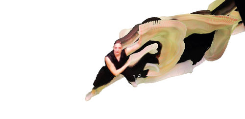
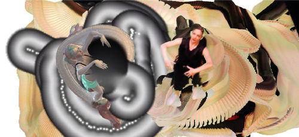
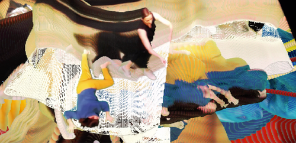
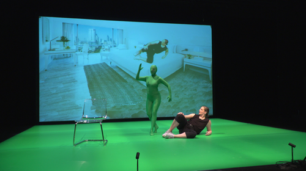
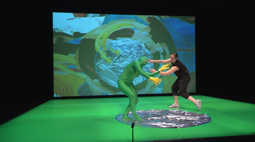
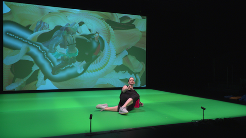
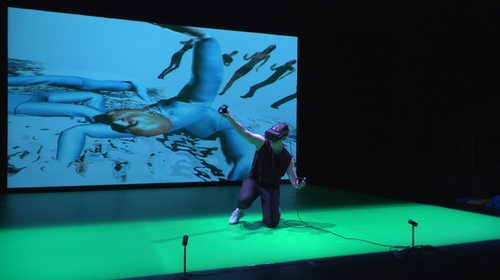
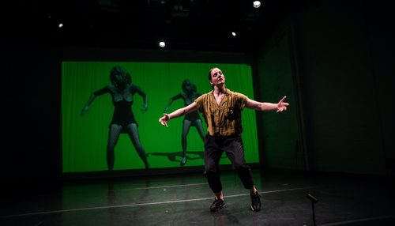
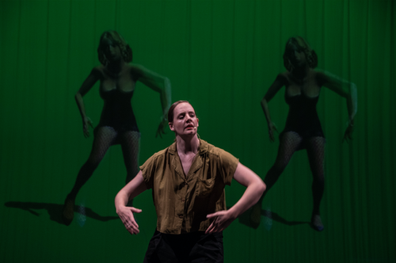
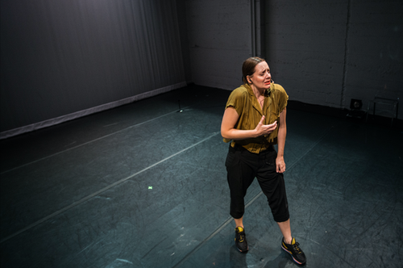
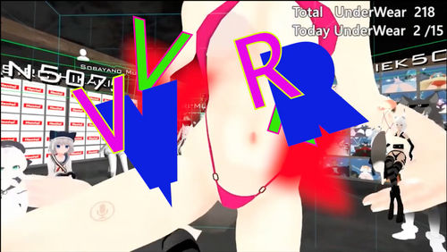
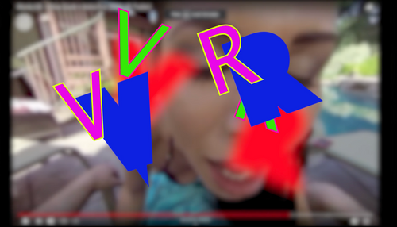
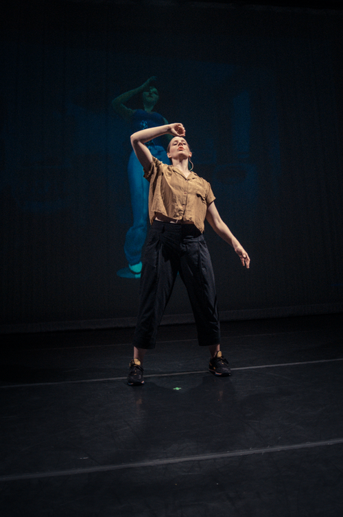
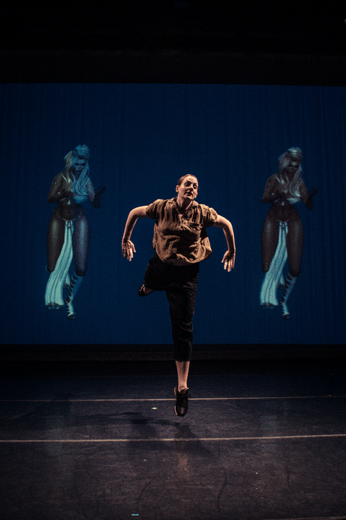
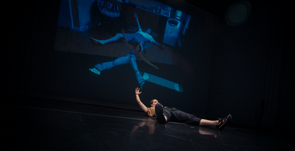